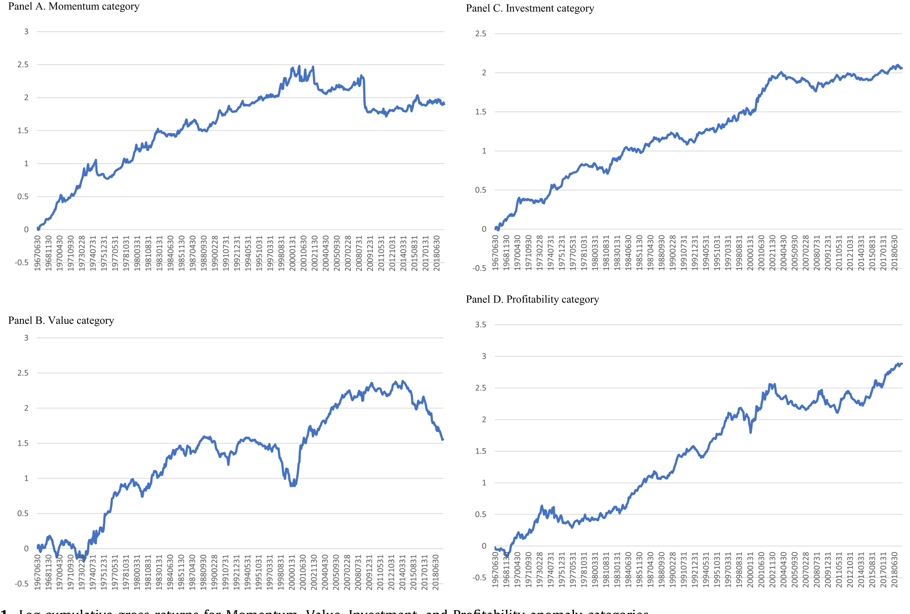
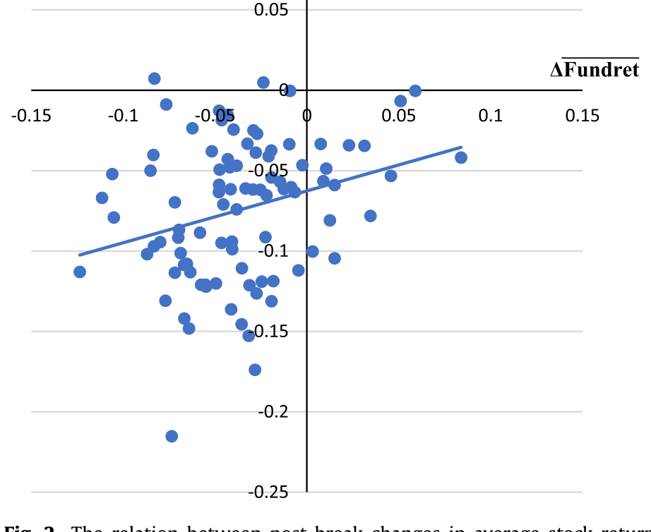
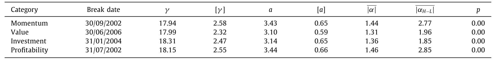
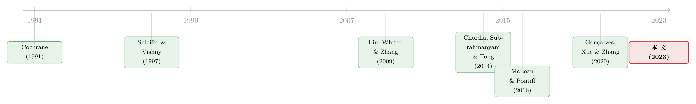

异象的消退，是被「套利」吃掉了，还是基本面自己缩水了？
本文读的是 Choy, Lewis & Tan (2023, JFE)：过去二十年里，动量、价值、投资、盈利这四大类股票异象 (anomalies) 的收益普遍「消退」(attenuation)。主流叙事把它归功于套利交易——市场变聪明了，错误定价被抹平了。但本文给出一个反转的证据：这些异象多空组合之间的基本面回报 (fundamental return) 差距，本身就缩水了 59%；一旦把这块基本面的变化扣掉，投资类与盈利类异象的消退就不再显著。换句话说，消退的也许不是「错误定价」，而是「贴现率」。
1 一顿午餐凭空消失了
先讲一个让做量化的人夜不能寐的事实。
把过去几十年里学术界发现的那些「异象」拿出来——动量 (Momentum)、价值 (Value)、资产增长/投资 (Investment)、盈利能力 (Profitability)——按信号排序、买入头部、卖空尾部，构造多空对冲组合。在 2000 年以前，这些组合年复一年地吐出可观的超额收益。可大约从本世纪初开始，它们集体「熄火」了。Chordia, Subrahmanyam, and Tong (2014) 发现，十二个最著名异象的收益自 2001 年起大约腰斩；Green, Hand, and Zhang (2017) 把 94 个公司特征都算上，发现 2003 年之后对冲收益急剧下滑，剔除微型股 (microcap) 之后，平均对冲收益甚至与零无异；McLean and Pontiff (2016) 检视来自 79 篇论文的 97 个预测变量，发现一个异象一旦被学术界公开，它的多空收益平均萎缩 58%。
所以，一顿原本摆在桌上的午餐，凭空消失了。
问题是：谁把它吃掉了？
主流的回答只有一个词——套利 (arbitrage)。这个故事讲得很顺：信息和交易环境越来越便宜、越来越方便，量化多空策略变得唾手可得；越来越多的钱涌进来抢同一份超额收益，价格被迅速推向「有效」，异象于是消退。这个解释有一个极其重要的潜台词：既然异象是被套利「修正」掉的，那它当初的存在，本身就是错误定价 (mispricing) 的证据。市场过去是「错」的，现在变「对」了。
这正是本文想要挑战的地方。
注意这条逻辑链：异象消退 ⇒ 套利抹平 ⇒ 异象曾是错误定价 ⇒ 市场效率提高。本文要做的，是从最后一环往回拆——如果消退能用别的东西解释，那么「市场变有效了」这个结论就站不住脚了。
2 另一种可能：午餐从来就不是免费的
接着，一个自然的问题是：除了「被人吃掉」，午餐消失还有没有别的可能？
有。它本来就不是免费的，而是一份风险的对价；后来这份风险自己缩水了。
这就要请出投资学里那条优雅的主线——投资的 q-理论 (q-theory of investment)。它的核心直觉是：给定盈利能力，企业会根据贴现率 (discount rate) 的变化来最优地调节投资。资本成本高，新项目的净现值低，企业就少投；资本成本低，净现值高，企业就多投。企业一直投到「投资的边际收益等于边际成本」为止。而在这个最优点上，会浮现出一个深刻的等式：
$$ r^S_{i,t+1} = r^I_{i,t+1} $$
也就是说，股票收益（已实现的贴现率）等于投资收益（investment return）。这条等式是 Cochrane (1991) 奠基的生产基础资产定价 (production-based asset pricing) 的灵魂。
如果你接受这条等式，那么对「异象消退」就有了一个全然不同的读法。一个异象的多空组合，本质上是把贴现率高的股票（高预期收益）和贴现率低的股票放在两端。从 q-理论看，异象消退意味着多空两腿的贴现率（以及投资收益）在「消退期」变得比「消退前」更接近了。这跟套利、跟市场效率毫无关系——它只是基本面（贴现率）随时间变化的自然结果。
于是，整篇文章的核心张力就立住了：
同样是「异象收益归零」，可以是两个完全相反的故事——套利故事说它曾经是错误定价，如今被修正；q-理论故事说它从来都是风险的合理定价，只是风险本身缩小了。问题在于：怎么把这两个故事在数据里分开？
3 把「基本面回报」量出来：两资本投资 CAPM
但真正关键的一步在于：你得有一把尺子，能把每只股票「基本面应得的回报」单独量出来——这样才能看它有没有缩水。
光有 \(r^S = r^I\) 这条抽象等式还不够，因为投资收益 \(r^I\) 没法直接观测。本文借用了 Gonçalves, Xue, and Zhang (2020) 新近开发的两资本投资 CAPM (two-capital investment CAPM)。它的妙处在于：同时纳入长期物理资本 (physical capital) 和短期营运资本 (working capital) 两类投资，能够用纯粹的公司层面会计科目把「基本面回报」算出来，而且——这一点至关重要——它能同时拟合动量、价值、投资、盈利四个溢价。这也正是本文只挑这四类异象下手的原因：尺子只对这四类好使。
模型从企业最大化股权价值的一阶条件出发，可以证明：物理资本投资收益与营运资本投资收益的加权平均，应当等于股权成本与税后债务成本的加权平均。把股权成本（也就是股票收益）解出来，就得到了投资 CAPM。本文把它写成第 (1) 式——这是全文的心脏：
这里 \(r^S_{i,t+1}\) 是股票收益，\(r^F_{i,t+1}\) 是基本面回报，\(r^K\)、\(r^W\) 分别是物理资本与营运资本的投资收益，\(w^K\) 是物理资本占企业市值的权重，\(w^B\) 是市场杠杆，\(r^{Ba}\) 是税后债务成本。模型说得很干脆：股票收益应当等于基本面回报，而基本面回报主要由两类投资收益的加权平均驱动。
那 \(r^K\) 又从哪来？它来自把企业的投资—产出关系代进去的第 (2) 式。其中物理资本投资收益取决于：当期边际产出 \(\gamma Y_{i,t+1}/(K_{i,t+1}+W_{i,t+1})\)、税盾、折旧 \(\delta_{i,t+1}\)、调整成本参数 \(a\)、以及托宾 q 值 \(q_{i,t}\)。直觉上，这把「一家公司今天投了多少、明天打算投多少、每单位资本产出多少」全都翻译成了它「基本面应得的回报」。代进 (1) 式后，基本面回报 \(r^F_{i,t+1}\) 就成了 \(a\)、\(\gamma\)、税率、市值权重和一堆会计变量的函数——除了 \(a\) 和 \(\gamma\) 需要估计，其余全部可观测。
模型怎么落地？本文跟随 Gonçalves, Xue, and Zhang (2020)，用四十个测试组合（按账面市值比、动量、资产增长、ROE 各分十组，NYSE 断点、市值加权）来联合估计 \(a\) 和 \(\gamma\)。采用的是广义矩估计 (GMM)，矩条件极其朴素：
$$ E\!\left[\, r^S_{p,t+1} - r^F_{p,t+1} \,\right] = 0 $$
即让股票收益与基本面回报的差（也就是投资 CAPM 的 alpha，定价误差）在四十个组合上联合最小化。权重矩阵用单位阵 (Cochrane, 1996)，允许 12 期滞后修正自相关。
这里藏着本文一个容易被忽略却极其关键的设计：\(a\) 和 \(\gamma\) 一律用断点前 (pre-break) 数据估计。为什么？因为如果用全样本去估参数，股票收益在消退期的下滑会反过来「污染」参数，让基本面回报被动地跟着股票收益一起降——那就是循环论证了。只用断点前参数，意味着断点后算出来的基本面回报变化，是模型外生预测的，不是被结果倒推出来的。这是整篇文章识别逻辑的基石。
4 识别策略：先定「什么时候开始消退」
然后，要比较「消退前」和「消退后」，你得先知道消退是哪一天开始的。
本文没有拍脑袋选一个 2003 年了事，而是用 Karavias, Narayan, and Westerlund (2022) 开发的面板结构性突变模型 (panel structural break model)，让数据自己说话。结果四类异象各自找到了不同的断点：
- 动量：2002 年 9 月
- 价值：2006 年 6 月
- 投资：2004 年 1 月
- 盈利：2002 年 7 月
这四个不同的断点，本身就是对套利故事的第一记反驳。想一想：如果异象消退真的是「全市场范围内套利活动突然增强」（比如交易所改用「分」报价、流动性骤增）导致的，那四类异象就该同时断点——因为它们面对的是同一个市场环境的变化。可数据里它们各断各的。据作者所知，这也是第一篇记录到不同类别异象有不同结构性断点的论文。
把四类异象的对数累计收益画出来，「先涨后平」的拐点一目了然，而且拐点位置各不相同。

Figure 1: Log cumulative gross returns for Momentum, Value, Investment, and Profitability anomaly categories
5 反转：基本面回报，自己缩水了 59%
到这里，所有的零件都备齐了：一把能算基本面回报的尺子，一组干净的（断点前估计的）参数，四个数据驱动的断点。
接下来就是图穷匕见的一刀——比较断点前后，多空对冲组合的基本面回报差距。
结果是：平均而言，一个异象的多空基本面回报差，相比断点前水平下降了 59%。在控制了组合基本面回报的时序与截面相关性 (Driscoll and Kraay, 1998) 之后，这个下降在 1% 水平上显著。
这意味着什么？意味着异象的消退，伴随着多空两腿基本面表现差距的收窄。午餐缩水，不是因为有人来抢，而是因为厨房本身少做了菜。
分到四个类别看，基本面回报差的下降幅度分别是：动量 40%、价值 57%、投资 64%、盈利 75%；其中动量、投资、盈利三类显著，价值不显著。
但真正的杀手锏在下一步。作者定义了一个量：投资 CAPM alpha 的变化 = 股票收益差的变化 − 基本面回报差的变化。说白了，这是「扣掉基本面能解释的部分之后，还剩多少消退没被解释」。结论是：对于投资类和盈利类异象，这个残差在统计上不显著。
换句话说：投资类和盈利类异象的消退，几乎全部能被基本面回报的变化解释掉。扣掉基本面，残差归零。模型对这两类「工作得格外好」；对动量类部分有效；唯独对价值类失灵——价值异象的基本面回报差下降不显著，模型解释不了它的消退。这是本文诚实标出的一处软肋。
为什么投资和盈利类被解释得这么干净？作者顺着 q-理论的机制做了一次「拆中拆」：去看驱动基本面回报的关键输入——下一期与当期的投资—物理资本比 (investment-to-physical-capital ratio)——的多空价差怎么变。q-理论预测：当期投资越高、或未来投资越低的股票，预期收益越高。数据里恰好对上：多空价差在下一期 I/K 上收窄、在当期 I/K 上变宽，方向与对基本面回报的影响完全一致。更妙的是，当期投资价差变宽集中在投资类异象身上，下一期投资价差收窄则集中在盈利类异象身上——各打各的靶，丝丝入扣。
而把每个异象单拎出来看，本文还发现一条干净的横截面规律：基本面回报差下降越多的异象，股票收益消退得也越厉害。这正是 q-理论的核心预言。

Figure 2: The relation between post-break changes in average stock return
6 那套利和「学术公开」呢？把对手的牌一张张盖死
讲到这里，一个严谨的读者一定会反问：你证明了基本面能解释消退，可这不等于套利不起作用啊——会不会两者都对？
于是本文用了相当多的篇幅，去主动「证伪」对手的故事。
第一张牌：套利成本。 如果异象是被低成本套利抹平的，那么套利成本下降得越多的异象，消退就该越厉害。本文按 McLean and Pontiff (2016) 的口径，用四个代理变量度量套利成本——多空两腿的异质性波动率 (idiosyncratic volatility)、买卖价差 (bid-ask spread)、是否分红 (dividend payer status)、美元成交量 (dollar trading volume)——结果是：这些套利成本的变化，无法解释消退的幅度。消退幅度的横截面差异，与各异象断点前的套利成本差异无关。这与套利故事直接矛盾。
第二张牌：学术公开（投资者学习）。 也许套利成本没变，但越来越多投资者「学会」了交易这些异象，套利活动照样增加。McLean and Pontiff (2016) 不正发现收益在论文发表后掉了 58% 吗？可本文发现：在控制了类别特定的断点之后，学术公开日期对异象消退没有任何增量解释力。哪怕只看那些「发表日期与断点至少相隔五年」的子样本，这个结论依然成立。

Table 3: reports the parameters estimated using data be-
第三张牌：管理层「盲目」调投资的反驳。 q-理论的怀疑者可能说：就算股票被错误定价，管理层也可能盲目地调整投资去让投资收益等于股票收益，于是基本面回报照样会随错误定价被套利掉而下降——这样一来，基本面解释和错误定价解释就观测等价了。本文借 Zhang (2020) 的论证反击：管理层完全可以通过增发或回购股份来调节供给、把错配的股价拉回均衡，而不必扭曲实际投资。更有力的是前面那张「套利成本」的牌——如果断点前的收益真由错误定价驱动，消退幅度就该随套利成本而变；可它没有。
三张牌盖下来，套利故事在这四类异象上几乎无处落脚。
作者在此处异常克制、也异常诚实：他们反复强调这个结论不能外推。本文只检验了能被两资本 CAPM 度量的四类异象。对于其他异象，学术公开和套利成本完全可能才是消退的真凶。这篇文章的目标不是推翻套利故事，而是证明——「异象消退」并不必然等于「市场变有效」，至少存在一个同样可信、甚至更干净的替代解释：时变的贴现率。
7 文献脉络
把这篇文章放回它所在的那条河流里，会看得更清楚。
源头是 Cochrane (1991) 的生产基础资产定价，第一次把股票收益与企业的实际投资活动用 \(r^S = r^I\) 绑在一起；随后 Cochrane (1996) 给出投资基础模型的截面检验。这条「投资 CAPM」的支流在 2000 年代蔚为壮观——Li, Livdan, and Zhang (2009) 直接以《Anomalies》为题、Liu, Whited, and Zhang (2009) 给出投资基础的预期收益、Liu and Zhang (2014) 用它重新诠释动量、Hou, Xue, and Zhang (2015) 搭起 q-因子模型。直到 Gonçalves, Xue, and Zhang (2020) 把物理资本与营运资本一起纳入，造出了本文赖以为生的那把尺子——两资本投资 CAPM。

与此并行的，是另一条「异象消退」的河——Chordia, Subrahmanyam, and Tong (2014)、McLean and Pontiff (2016)、Green, Hand, and Zhang (2017) 三篇接力，把「套利抹平错误定价」几乎钉成了行业共识；其背后又站着限制套利 (limits of arbitrage) 的经典——Shleifer and Vishny (1997)、Pontiff (1996, 2006)。再加上计量上 Karavias, Narayan, and Westerlund (2022) 提供的面板结构性断点工具。
本文 (2023) 站的位置，恰是这两条河的交汇口：它把投资 CAPM 这把尺子，第一次系统地架到「异象消退」这个本属于套利文献的问题上，给出了一个时变贴现率的反叙事。（关于投资基础资产定价模型本身能不能经得起逐年对账，可参见《一个「成功」的模型，为什么经不起逐年对账？》；关于异象多空收益究竟由谁推动，可参见《异象收益究竟是谁推动的？》 与《买卖双方各执一词：当 193 个异象告诉你「谁是聪明钱」》。)
8 评论与延伸（Q&A + 研究方向）
(a) 几个可能的疑问
Q：「基本面回报下降」和「贴现率下降」，到底是不是一回事？会不会只是换了个说法？
在 q-理论框架里它们是一枚硬币的两面。基本面回报 \(r^F\) 由投资收益驱动，而在最优投资点上投资收益等于已实现的贴现率。所以「多空基本面回报差收窄」翻译过来就是「多空两腿的贴现率趋同」。本文的贡献不在于发明这个等价，而在于用 Gonçalves-Xue-Zhang 的尺子把它量化出来，并证明它能吃掉投资类、盈利类异象消退的几乎全部。
Q：用断点前参数算断点后的基本面回报，这一步真的能避免循环论证吗？
这是全文最该被盯住的设计，我认为它基本站得住。若用全样本估 \(a\)、\(\gamma\)，股票收益的消退会通过 GMM 矩条件反向压低基本面回报，结论就废了。只用断点前数据，意味着断点后的 \(r^F\) 是模型的样本外预测。剩下的担心是参数稳定性——若 \(a\)、\(\gamma\) 本身在断点后漂移了，外推就有偏。作者引 Gonçalves-Xue-Zhang 说两资本模型参数比单资本「更稳」，但这是借来的信心，不是本文直接证的。
Q：为什么模型对价值类异象失灵？这是不是说明整套故事不靠谱？
价值类的基本面回报差下降不显著，模型确实解释不了它的消退。但我不认为这推翻了全文——恰恰相反，它是一个诚实的边界。这与近年「价值之死被夸大了」(Arnott, Harvey, Kalesnik, and Linnainmaa, 2021) 的讨论呼应：价值溢价的行为可能本就和投资、盈利不同。承认尺子在某一类上不灵，比硬说四类全中可信得多。
Q：不同类别有不同断点，凭什么就否定了套利？套利不能也是分类别、分阶段进场的吗？
这是套利方最有力的反驳。本文的逻辑是：若消退源于全市场流动性/套利资本的变化（如改用分报价），断点应当同步。但套利者完全可以在不同时点针对不同异象进场，从而造出不同断点。作者真正的杀手锏其实不是断点的「异步」，而是后面那两张牌——消退幅度与套利成本、与发表日期都无关。断点异步只是辅证。
Q：这篇文章是不是在说「市场其实是有效的，异象都是风险」？
不是，作者很克制。他们只说：在这四类异象上，「消退」不能被简单读作「市场变有效」，因为存在一个同样可信的时变贴现率解释。他们明确承认结论不可外推到其他异象，那些异象的消退可能真的是套利和学习的结果。这是一个关于「证据该如何被诠释」的论文，不是一个关于「市场到底有没有效」的终审判决。
Q：样本停在 2019 年底、刻意避开 Covid，会不会让结论显得「挑时间」？
避开 2020 年的极端、不可预期事件，在结构性断点估计里是合理的——否则一个外生冲击会被误判成断点。代价是失去了最近五年的数据。我会想看作者把样本延到 2023、用更稳健的断点方法重做一遍，看四个断点是否依旧。
(b) 几个可能的研究问题与提案
1. 把这套「基本面回报」尺子搬到公司债异象上。
【经济故事】公司债市场同样有一堆横截面异象（动量、价值、违约风险等），近年也被指消退。债券的「基本面回报」能否用类似的投资/q-理论逻辑刻画？若能，债券异象的消退到底是被套利吃掉，还是发行人基本面（杠杆、投资）趋同？ 【可行性】中。需要 TRACE 成交数据 + Compustat 基本面，识别上可复用本文的「断点前估参数 + 面板断点」框架。难点在于债券收益与股权投资 CAPM 的映射没有现成模型，得自己搭，理论风险不低。
2. 外资持有人是否加速了异象的「基本面趋同」？
【经济故事】本文把消退归给基本面，却没问「是谁的交易让两腿基本面趋同的」。一个自然猜想：全球资本（外资机构）大举进入某类股票后，会同时改变这些公司的投资与融资行为，从而压缩多空两腿的基本面回报差。 【可行性】中。可用 FactSet/13F 的外资持股，配合本文的基本面回报度量，做「外资持股变化 × 断点后」的双重差分。识别上要处理外资进场的内生性（可借指数纳入这类准自然实验）。
3. 把套利成本与基本面变化放进同一个分解里，量化各自占多少。
【经济故事】本文分别否证了套利、肯定了基本面，但没给出一个统一的「消退 = α·基本面 + β·套利成本 + 残差」的方差分解。一个完整的会计式分解，能告诉我们在每一类、每一个异象上，两种力量的相对权重。 【可行性】高。所需数据本文已基本备齐（基本面回报 + 四个套利成本代理），方法上是一次组合层面的横截面方差分解，doable，且能直接回应「会不会两者都对」的疑问。
4. 用流动性视角检验「基本面解释」的隐含预测。
【经济故事】若异象消退真源于基本面/贴现率趋同而非套利涌入，那么多空组合的交易量、价差、价格冲击在断点后不该系统性放大；反之套利故事预测它们会放大。这是一个能把两种故事在「流动性」维度上分开的干净检验。 【可行性】高。CRSP/TAQ 即可度量这些流动性变量，识别上就是「断点前后 × 消退幅度」的交互。与本文的套利成本检验互补，是一个低成本、高信息量的延伸。（流动性视角下异象多空组合的特性，可参见《流动性的方向感：异象多空组合，其实并不「流动性中性」》。）
9 我的判断与参考文献
贡献。 这篇文章最漂亮的地方，是把一个本属于「市场效率」之争的实证问题，拉进了「时变贴现率」的框架，并提供了一把可操作的尺子去做切分。它没有满足于「异象消退」这个事实，而是追问「消退本身意味着什么」——并给出一个克制、可证伪、且部分被数据强力支持的反叙事。「不同类别有不同断点」「消退幅度与套利成本无关」「发表日期无增量解释力」这三块证据，单看都不致命，合起来却相当有说服力。
对识别的担忧。 我最大的保留有两点。其一，整套结论压在「断点前参数能外推到断点后」这个假设上；一旦 \(a\)、\(\gamma\) 在消退期发生了漂移，外推出的基本面回报就有系统性偏差，而本文对参数稳定性的信心是借来的。其二，「基本面解释」与「管理层盲目调投资致使投资收益也被错误定价污染」这两个故事在观测上高度接近，本文靠 Zhang (2020) 的理论论证和套利成本证据来切分，但这更多是逻辑上的、而非一个干净的外生冲击。价值类的失灵也提醒我们：这把尺子并非万能。
后续想看到的。 我想看三件事：把样本延到 2023 年、用替代的断点方法重估四个断点是否稳健；把套利与基本面放进同一个方差分解，给出量化权重而非「非此即彼」；以及把这套逻辑搬到公司债与外资持有人的场景里，去检验「基本面趋同」是不是一个更普适的消退机制，还是仅仅在这四类股票异象上成立。
参考文献
- Arnott, R.D., Harvey, C.R., Kalesnik, V., Linnainmaa, J.T. (2021). Reports of value's death may be greatly exaggerated. Financial Analysts Journal 77(1), 44–67.
- Chordia, T., Subrahmanyam, A., Tong, Q. (2014). Have capital market anomalies attenuated in the recent era of high liquidity and trading activity? Journal of Accounting and Economics 58(1), 41–58.
- Cochrane, J.H. (1991). Production-based asset pricing and the link between stock returns and economic fluctuations. Journal of Finance 46(1), 209–237.
- Cochrane, J.H. (1996). A cross-sectional test of an investment-based asset pricing model. Journal of Political Economy 104, 572–621.
- Driscoll, J.C., Kraay, A.C. (1998). Consistent covariance matrix estimation with spatially dependent panel data. Review of Economics and Statistics 80(4), 549–560.
- Gonçalves, A.S., Xue, C., Zhang, L. (2020). Aggregation, capital heterogeneity, and the investment CAPM. Review of Financial Studies 33(6), 2728–2771.
- Green, J., Hand, J.R., Zhang, X.F. (2017). The characteristics that provide independent information about average US monthly stock returns. Review of Financial Studies 30(12), 4389–4436.
- Hou, K., Xue, C., Zhang, L. (2015). Digesting anomalies: An investment approach. Review of Financial Studies 28(3), 650–705.
- Karavias, Y., Narayan, P.K., Westerlund, J. (2022). Structural breaks in interactive effects panels and the stock market reaction to COVID-19. Journal of Business & Economic Statistics, 1–14.
- Li, E.X., Livdan, D., Zhang, L. (2009). Anomalies. Review of Financial Studies 22, 4301–4334.
- Liu, L.X., Whited, T.M., Zhang, L. (2009). Investment-based expected stock returns. Journal of Political Economy 117, 1105–1139.
- Liu, L.X., Zhang, L. (2014). A neoclassical interpretation of momentum. Journal of Monetary Economics 67, 109–128.
- McLean, R., Pontiff, J. (2016). Does academic research destroy stock return predictability? Journal of Finance 71, 5–31.
- Pontiff, J. (2006). Costly arbitrage and the myth of idiosyncratic risk. Journal of Accounting and Economics 42, 35–52.
- Shleifer, A., Vishny, R.W. (1997). The limits of arbitrage. Journal of Finance 52, 35–55.